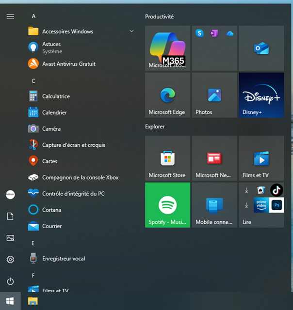

🖥️ DTLteach - Mon ordinateur expliqué simplement
Guide pratique pour débutants et grands-parents
1Bienvenue
Ce guide explique Windows 11 avec des mots simples. Prenez votre temps et avancez chapitre par chapitre.
2Le menu Démarrer
La barre des tâches est située en bas de l'écran. Les icônes sont centrées par défaut. Le bouton Démarrer est la première icône à gauche du groupe d'icônes centré.

Le menu Démarrer permet d'accéder aux programmes, aux documents, aux paramètres et à l'arrêt de l'ordinateur.
3Les 6 icônes de la colonne de gauche
Sur l'image, la colonne verticale de gauche contient six raccourcis très utiles. De haut en bas, vous trouverez :
☰ Menu
Affiche ou masque les noms des raccourcis.
Affiche ou masque les noms des raccourcis.
👤 Compte utilisateur
Accès à votre profil.
Accès à votre profil.
📄 Documents
Vos lettres et fichiers personnels.
Vos lettres et fichiers personnels.
🖼️ Images
Vos photographies.
Vos photographies.
⚙️ Paramètres
Réglages de Windows.
Réglages de Windows.
⏻ Marche / Arrêt
Mettre en veille, redémarrer ou arrêter.
Mettre en veille, redémarrer ou arrêter.
4Agrandir l'affichage
Agrandir uniquement le texte
Démarrer → Paramètres → Accessibilité → Taille du texte
Agrandir tout l'écran
Démarrer → Paramètres → Système → Affichage → Mise à l'échelle
Essayez 150 % pour un confort de lecture optimal.
5Le Bureau Windows
🗑️ Corbeille
📁 Dossiers
📌 Barre des tâches
🕒 Horloge
6Les fenêtres
- _ Réduire
- □ Agrandir
- X Fermer
7L'Explorateur de fichiers
Vous y trouverez Documents, Images, Musique, Vidéos et Téléchargements.
8Internet
- Ouvrir Microsoft Edge
- Taper une recherche
- Appuyer sur Entrée
9Les e-mails
Un e-mail est une lettre envoyée par Internet.
10Utiliser une clé USB
Branchez la clé puis ouvrez l'Explorateur de fichiers.
11Connexion Wi‑Fi
Cliquez sur l'icône réseau puis choisissez votre box Internet.
12Programmes essentiels
🌐 Microsoft Edge
📷 Photos
🎨 Paint
🔢 Calculatrice
📅 Calendrier
🛡️ Sécurité Windows
13Les règles d'or
✔ Faire les mises à jour
✔ Utiliser un mot de passe
✔ Se méfier des arnaques
✔ Demander de l'aide en cas de doute
✔ Utiliser un mot de passe
✔ Se méfier des arnaques
✔ Demander de l'aide en cas de doute